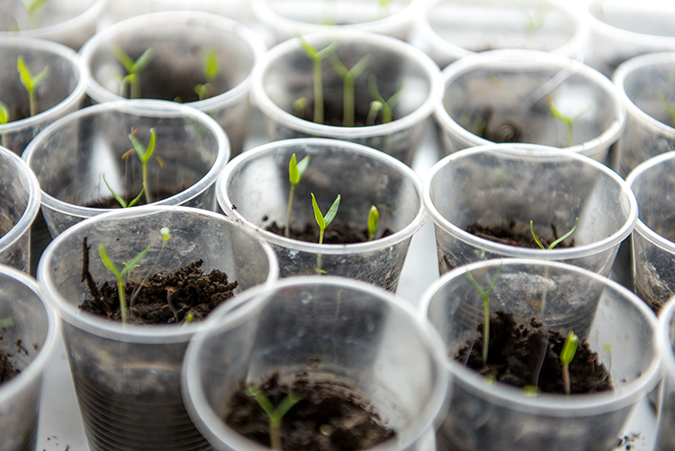

A Fun Introduction to Data Analysis and Visualization
2021-10-02
Chapter 1 Why we need data analysis tools
In everyday life, we collect information about the world through our senses – our eyes, our ears, et cetera. In science, however, we collect information about the world by making measurements on things in the world. This process results in data sets, collections of numbers that reflect some characteristic or characteristics of our world. Let’s look at a simple example done in science fairs since time immemorial:
Does talking to plants make them grow faster?

Here are some data!
Height of bean sprouts I didn’t talk to (in mm) 7 days after I planted them:
13 16 15 16 15 17 20 18 16 12
Height of bean sprouts I did talk to (also in mm, of course!) 7 days after I planted them (also of course)!
19 19 17 15 16 17 17 17 12 14
So, what do you say?
Did the plants that I talked to grow faster? If you start looking at the two sets of numbers from left to right, you’re like “Oh, 19 vs. 13, 19 vs. 16, 17 vs. 15! 3 wins out of 3!” But if you keep looking, you end up with 5 wins for talking, 4 wins for not-talking, and one tie. Technically speaking, talking did “win” overall, but do you think that win is “real” in the sense that talking actually did something? Do you think, if we repeated this experiment 99 more times, talking would always win? Your answer to both of these questions probably started with “Um…”, and that’s totally fine. My answer starts with “Um” also. My full answers are something like
“Um, I kinda don’t think talking made a difference because plants don’t have ears.” and
“Um, probably not literally always, I think it would closer to 50:50, but…”
If pressed further, I would probably end up saying something like
“Okay, going into this experiment, I didn’t think talking would do anything because plants don’t have ears. Looking at the data, I just don’t see that much of a difference. Whatever difference there is was probably just due to random fluctuations in plant growth from bean sprout to bean sprout. Now, if that second set of numbers was something like 29, 32, 30, etc., then I would be willing to entertain the possibility that talking to plants might make them grow faster, and dig into the matter with further experiments.”
Does that make sense?
The point here is that, to decide things about the world, we need to collect data… but it seems that just collecting a data set and looking at the numbers themselves is probably not going to help us understand the world in all cases. When I glance at the two sets of numbers above, that is pretty much all I see, just two sets of numbers – numbers that may or may not be basically the same.
So it seems that we need some tools, namely, tools for
- visualizing data sets
- summarizing data sets
- deciding whether a data set looks weird or unexpected given what we thought we knew about the world (e.g., if talking doesn’t work, is this data set bizarre, or pretty much what we expected?)
and
- changing, or not, what we think we know about the world based upon our data (e.g. is this data set so bizarre that we should re-think our beliefs about talking to plants?)
The goal of this book is to provide you with such tools.